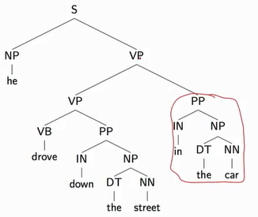

###The parsing problem
A parse tree is a hierarchical decomposition of a sentence, encoding the grammatical structure within the sentence.
The information conveyed by parse trees
(1) Part of speech for each word (N = noun, V = verb, DT = determiner)
(2) Phrases
Noun Phrases (NP): “the burglar”, “the apartment”
Verb Phrases (VP): “robbed the apartment”
Sentences (S): “the burglar robbed the apartment”
(3) Useful Relationships
This template tells us that “the burglar” is the subject of “robbed”
###Context-free grammars
A context free grammar $G = (N,\Sigma,R,S)$ where:
$\qquad N$ is a set of non-terminal symbols
$\qquad\Sigma$ is a set of terminal symbols
$\qquad R$ is a set of rules of the form $X\rightarrow Y_1Y_2\cdots Y_n$ for $n\ge0,X\in N,Y_i\in(N\cup \Sigma)$
$\qquad S\in N$ is a distinguished start symbol
An example
####Left-most deriviation
A left-most derivation is a sequence of strings $s_1\cdots s_n$, where $s_1=S$, the start symbol, $s_n\in\Sigma\text{*}$, i.e., $s_n$ is made up of terminal symbols only. Each $s_i$ for $i=2\cdots n $ is derived from $s_{i-1}$ by picking the left-most non-terminal $X$ in $s_{i-1}$ and replacing it by some $\beta$ where $X\rightarrow\beta$ is a rule in $R$. For example: [S], [NP VP], [D N VP], [the N VP], [the man VP], [the man Vi], [the man sleeps].
A CFG defines a set of possible derivations. (In most cases the set is infinite) A string $s\in\Sigma\text{*}$ is in the language defined by the CFG if there is at least one derivation that yields $s$. Each string in the language generated by the CFG may have more than one derivation (“ambiguity”). For example, the sentence “he drove down the street in the car” can be derived from:
[S], [NP VP], [he VP], [he VP PP], [he VB PP PP], [he drove PP PP], [he drove IN NP PP], [he drove down NP PP], [he drove down DT NN PP], [he drove down the NN PP], [he drove down the street PP], [he drove down the street IN NP], [he drove down the street in NP], [he drove down the street in DT NN], [he drove down the street in the NN], [he drove down the street in the car]
[S], [NP VP], [he VP], [he VB PP], [he drove PP], [he drove IN NP], [he drove down NP], [he drove down NP PP], [he drove down DT NN PP], [he drove down the NN PP], [he drove down the street PP], [he drove down the street IN NP], [he drove down the street in NP], [he drove down the street in DT NN], [he drove down the street in the NN], [he drove down the street in the car]
We use parse tree to represent these deriviations. Different parse trees correspond to difference interpretations of the underlying sentence. In the first parse tree, the PP “in the car” is modifying the entire verb phrase “drove down the street” (by far the most likely interpretation), while in the second tree, it is modifying the noun phrase “the street” (which means the street is in the car).

The problem with parsing—ambiguity: there are several possible syntactic structures for the sentence corresponding to various different interpretations, most of which are quite unlikely but all of which are nevertheless sytactically well formed.
###A brief sketch of the syntax of English
###Examples of ambiguous structures